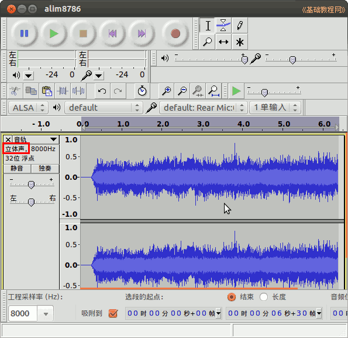
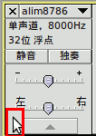

Audacity 音频编辑器教程
作者：TeliuTe 来源：基础教程网
六、声道分离 返回目录 下一课立体声分为左右声道，分别是音乐和人声，在左侧面板中可以分离；
1、声道分离
1）启动 Audacity，点菜单”文件—打开“命令，打开一个音频文件，本课有练习文件(下载)；

2）在左侧音频信息面板上边，点音乐名称旁边的下拉按钮，选择“分割立体声到单声”；
3）这时音乐会分割成上下两部分，有黄边框的是当前选中的声道，左侧标签上显示了是左声道还是右声道；
4）点菜单“编辑—选择—光标移至音轨末”，就可以选中一个声道，再点菜单“文件—导出选中部分”，如果光标不在开头，先点上边播放栏的跳至开头按钮，
在声道左侧面板左下角空白处单击也可以选中该音轨；

5）另外也可以点音轨左边标签上的“×”按钮删除一个声道，然后点菜单“文件—导出..”即可；
本节学习了声道分离的基础知识，如果你成功地完成了练习，请继续学习下一课内容；
本教程由86团学校TeliuTe制作|著作权所有
基础教程网：http://teliute.org/
美丽的校园……
转载和引用本站内容，请保留版权信息和本站链接。